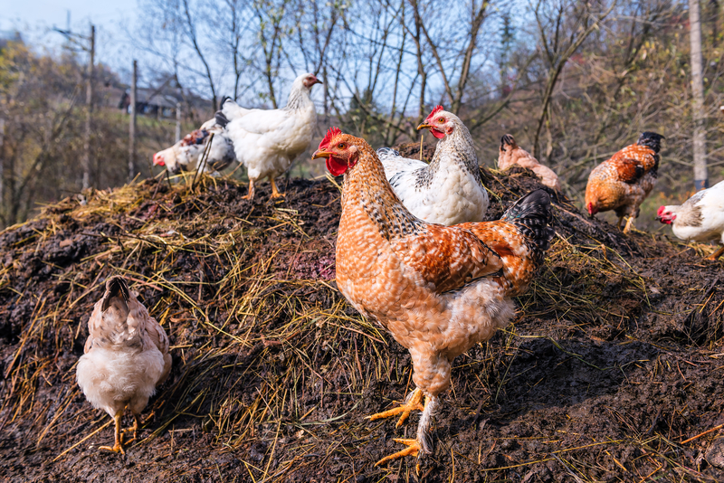
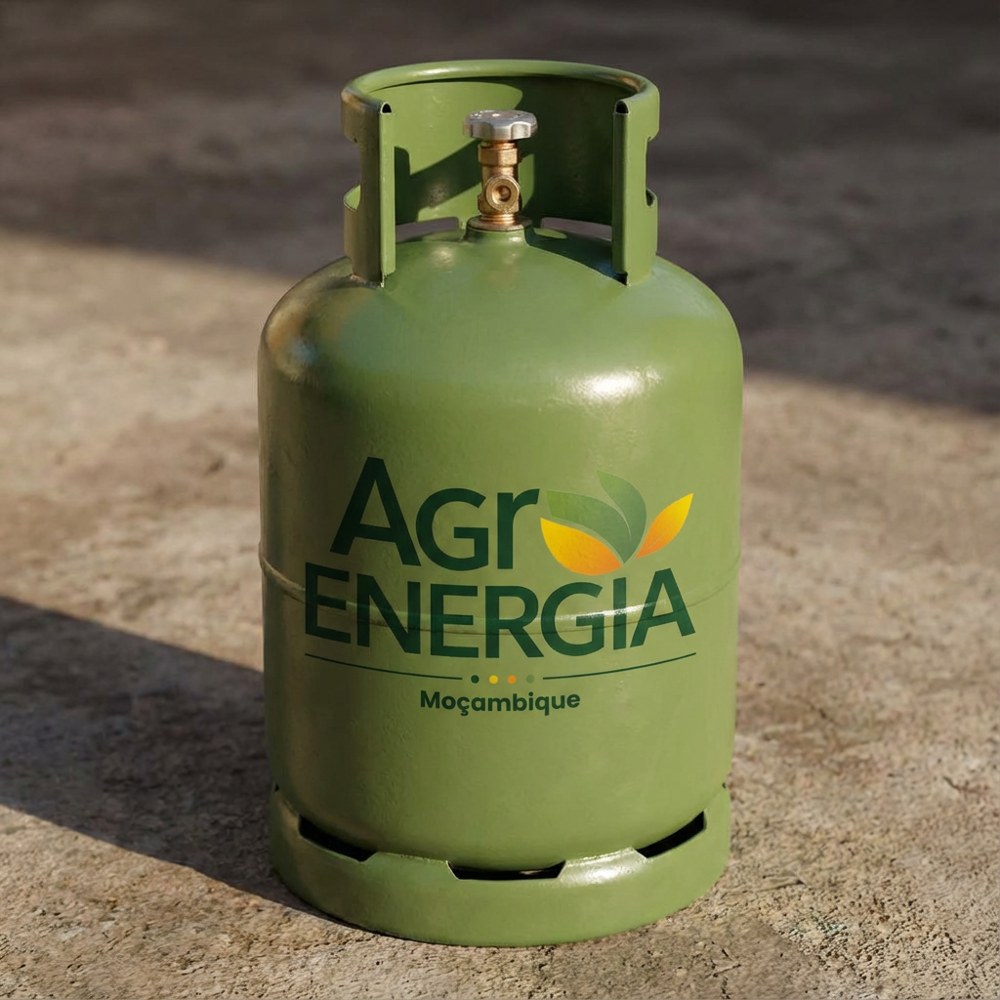
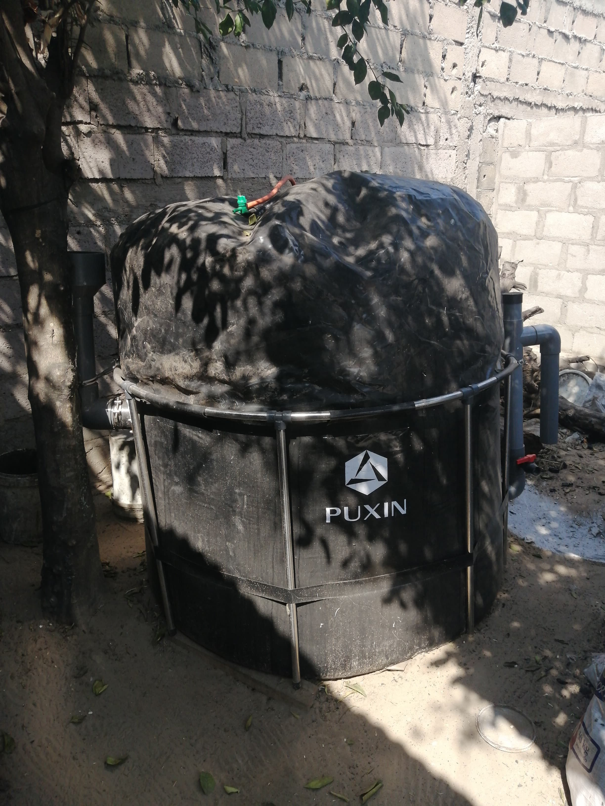

Green Poultry Farm Mozambique
Projeto integrado que transforma resíduos avícolas em energia e fertilizantes, aumentando a produtividade e reduzindo custos e emissões.
Resumo do projeto
O projeto Green Poultry Farm Mozambique demonstra um modelo replicável de unidade avícola sustentável, onde resíduos sólidos e líquidos são utilizados em biodigestores para produzir biogás, que abastece aquecimento, geração de eletricidade e processamento (como refrigeração e secagem). O digestato é tratado e empregado como biofertilizante para produção de forragem e culturas complementares.
Objetivos
- Reduzir dependência de combustíveis fósseis e lenha para aquecimento e cozinhar.
- Gerar energia local para processos de transformação (frigir, secar) e iluminação.
- Produzir biofertilizante para aumentar rendimento forrageiro e solo.
- Demonstrar viabilidade econômica e ambiental para replicação.
Benefícios esperados
- Redução de custos operacionais até 35% (estimado)
- Melhoria das condições sanitárias com gestão de resíduos
- Geração de emprego local e formação técnica
- Venda de excedente de energia e fertilizante
Detalhes técnicos
Fluxo operacional
O fluxo integra: recolha de esterco → pré-tratamento (triturar/produção de pasta) → alimentação do digestor → produção de biogás → tratamento do digestato → utilização do biogás (motor genset, cozimento, aquecimento) e aplicação do digestato como fertilizante.
Plano financeiro resumo
| Item | Estimativa (USD) |
|---|---|
| Engenharia e materiais | 15,000 |
| Instalação | 5,000 |
| Equipamentos elétricos | 8,000 |
| Formação & operação inicial | 2,000 |
| Total estimado | 30,000 |
Galeria & Fotos de obra



Monitorização e expansão
Propomos instalar sensores IoT para medir produção de biogás, temperatura, pH e consumo energético. Os dados permitem otimizar operação, prever manutenção e dimensionar expansão para escala comercial.
Parcerias e oportunidades de financiamento
Buscamos parcerias locais, investimento de impacto e financiamento por programas de sustentabilidade (doadores, fundos climáticos e bancos de desenvolvimento).